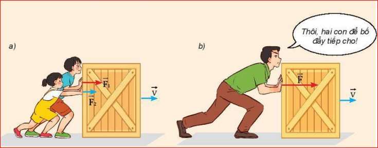
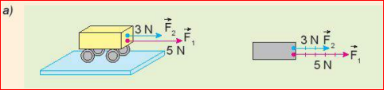
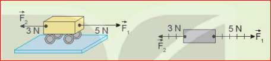
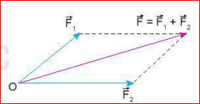
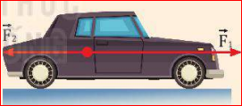
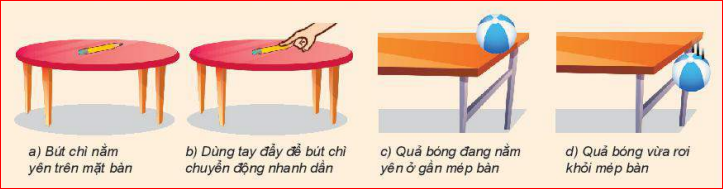
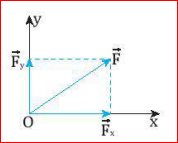
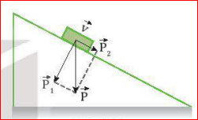
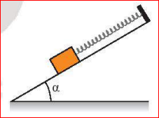

Tại sao lực đẩy của người bố trong Hình 13.1b có tác dụng như lực đẩy của hai anh em?

Hình 13.1. Ví dụ về tổng hợp lực
Lời giải: Vì lực đẩy của người bố có tác dụng giống hệt như lực đẩy của hai anh em cộng lại (làm thùng gỗ dịch chuyển cùng một đoạn với cùng một vận tốc), nên lực đẩy của bố được coi là hợp lực của hai lực mà hai anh em tác dụng lên thùng.
1. Tổng hợp hai lực cùng phương
? Câu hỏi
1. Dựa vào Hình 13.2, hãy nêu cách xác định độ lớn và chiều của hợp lực trong hai trường hợp:
a) Vật chịu tác dụng của hai lực cùng phương, cùng chiều (Hình 13.2a).
b) Vật chịu tác dụng của hai lực cùng phương, ngược chiều (Hình 13.2b).
2. Nêu quy tắc tổng hợp hai lực cùng phương.

a)

b)
Hình 13.2. Tổng hợp hai lực cùng phương
Lời giải:
1.
a) Cùng phương, cùng chiều: Hợp lực có chiều cùng chiều với hai lực, độ lớn bằng tổng hai lực (\(F = F_1 + F_2 = 3 + 5 = 8N\)).
b) Cùng phương, ngược chiều: Hợp lực có chiều của lực lớn hơn, độ lớn bằng hiệu độ lớn hai lực (\(F = |F_1 - F_2| = |5 - 3| = 2N\)).
2. Quy tắc: Hợp lực của hai lực cùng phương là một lực có cùng phương với hai lực đó. Chiều và độ lớn xác định như trên tùy thuộc vào việc 2 lực thành phần cùng chiều hay ngược chiều.
2. Tổng hợp hai lực đồng quy - Quy tắc hình bình hành
Từ các thí nghiệm và thực tế, người ta thấy rằng phép tổng hợp hai lực đồng quy tuân theo quy tắc hình bình hành sau đây:
Quy tắc hình bình hành:
Bước 1: Vẽ hai vectơ \(\vec{F}_1\) và \(\vec{F}_2\) đồng quy tại O.
Bước 2: Vẽ một hình bình hành có hai cạnh liền kề trùng với hai vectơ \(\vec{F}_1\) và \(\vec{F}_2\).
Bước 3: Vẽ đường chéo hình bình hành có cùng gốc O. Vectơ hợp lực \(\vec{F}\) trùng với đường chéo này: \(\vec{F} = \vec{F}_1 + \vec{F}_2\).

Hình 13.3. Tổng hợp lực theo quy tắc hình bình hành
? Bài tập rèn luyện
1. Cho hai lực đồng quy có độ lớn \(F_1 = 6\text{ N}\) và \(F_2 = 8\text{ N}\). Nếu hợp lực có độ lớn \(F = 10\text{ N}\) thì góc giữa hai lực \(\vec{F}_1\) và \(\vec{F}_2\) bằng bao nhiêu? Vẽ hình minh hoạ.
2. Giả sử lực kéo của mỗi tàu kéo ở đầu bài đều có độ lớn bằng \(8000\text{ N}\) và góc giữa hai dây cáp bằng \(30^\circ\).
a) Biểu diễn các lực kéo của mỗi tàu và hợp lực tác dụng vào tàu chở hàng.
b) Tính độ lớn của hợp lực của hai lực kéo.
c) Xác định phương và chiều của hợp lực.
d) Nếu góc giữa hai dây cáp bằng \(90^\circ\) thì hợp lực của hai lực kéo có phương, chiều và độ lớn như thế nào?
Lời giải:
1. Ta thấy \(10^2 = 6^2 + 8^2\) (tức là \(F^2 = F_1^2 + F_2^2\)). Theo định lí Pytago đảo, góc giữa hai lực là \(90^\circ\) (hai lực vuông góc nhau).
2.
b) Tính hợp lực: \(F^2 = F_1^2 + F_2^2 + 2F_1F_2\cos(30^\circ) = 8000^2 + 8000^2 + 2\cdot 8000\cdot 8000\cdot \frac{\sqrt{3}}{2}\).
Hoặc dùng công thức hình thoi: \(F = 2 \cdot F_1 \cdot \cos(15^\circ) \approx 2 \cdot 8000 \cdot 0.966 \approx 15455\text{ N}\).
c) Phương hợp lực trùng với đường phân giác của góc tạo bởi hai dây cáp, chiều hướng về phía trước theo hướng tàu kéo.
d) Nếu góc là \(90^\circ\): \(F = \sqrt{8000^2 + 8000^2} = 8000\sqrt{2} \approx 11314\text{ N}\). Phương là đường chéo hình vuông, chiều hướng theo hướng di chuyển của 2 tàu.
II. CÁC LỰC CÂN BẰNG VÀ KHÔNG CÂN BẰNG
1. Các lực cân bằng
Xét trường hợp vật đứng yên dưới tác dụng của nhiều lực. Khi đó tổng hợp các lực tác dụng lên vật bằng 0. Ta nói các lực tác dụng lên vật là các lực cân bằng và vật ở trạng thái cân bằng.
Hình 13.4. Hai lực \(\vec{F}_1\) và \(\vec{F}_2\) cân bằng nhau
? Câu hỏi
Quan sát quyển sách đang nằm yên trên mặt bàn (Hình 13.5).
a) Có những lực nào tác dụng lên quyển sách?
b) Các lực này có cân bằng không? Vì sao?
Lời giải:
a) Quyển sách chịu tác dụng của 2 lực: Trọng lực \(\vec{P}\) hướng xuống và Phản lực \(\vec{N}\) của mặt bàn hướng lên.
b) Các lực này cân bằng nhau vì quyển sách đang nằm yên (trạng thái cân bằng), hợp lực tác dụng lên quyển sách bằng \(\vec{0}\).
2. Các lực không cân bằng
Khi hợp lực của các lực khác 0 thì các lực này không cân bằng. Hợp lực hay lực không cân bằng này tác dụng vào một vật có thể làm thay đổi vận tốc của vật.
? Bài tập rèn luyện
1. Một ô tô chịu một lực \(F_1 = 400\text{ N}\) hướng về phía trước và một lực \(F_2 = 300\text{ N}\) hướng về phía sau (Hình 13.6). Hỏi hợp lực tác dụng lên ô tô có độ lớn bằng bao nhiêu và hướng về phía nào?

2. Quan sát mỗi cặp tình huống ở Hình 13.7.
a) Tình huống nào có hợp lực khác 0?
b) Mô tả sự thay đổi vận tốc (độ lớn, hướng) của mỗi vật trong hình, nếu có.

Lời giải: 1. Hai lực ngược chiều. Độ lớn hợp lực: \(F = |F_1 - F_2| = 400 - 300 = 100\text{ N}\). Hướng hợp lực là hướng về phía trước (cùng hướng với \(F_1\)). 2.
a) Tình huống có hợp lực khác 0 là: b) Dùng tay đẩy bút chì (vật bắt đầu chuyển động), d) Quả bóng vừa rơi khỏi mép bàn (rơi tự do do trọng lực).
b) Mô tả:
- Hình b: Bút chì đang nằm yên, chịu lực đẩy nên vận tốc tăng dần từ 0 (chuyển động nhanh dần).
- Hình d: Quả bóng rơi xuống, vận tốc tăng dần theo phương thẳng đứng hướng xuống.
III. PHÂN TÍCH LỰC
Phân tích lực là phép thay thế một lực thành hai lực thành phần có tác dụng giống hệt như lực ấy.
1. Quy tắc
a) Thường người ta phân tích lực thành hai lực vuông góc với nhau để lực thành phần này không có tác dụng nào theo phương của lực thành phần kia.
b) Phân tích lực là phép làm ngược lại với tổng hợp lực nhưng chỉ được áp dụng vào trường hợp riêng nêu ở trên.

Hình 13.8
2. Chú ý
LƯU Ý: Chỉ khi xác định được một lực có tác dụng theo hai phương vuông góc nào thì mới phân tích lực theo hai phương vuông góc đó.
3. Ví dụ
Xét một vật đang trượt trên một mặt phẳng nghiêng nhẵn (Hình 13.9). Trọng lực \(\vec{P}\) có tác dụng: một mặt nó ép vật vào mặt phẳng nghiêng, mặt khác nó kéo vật trượt theo mặt phẳng nghiêng xuống dưới. Vì thế ta phân tích trọng lực \(\vec{P}\) theo hai phương vuông góc.

Hình 13.9
? Câu hỏi thực hành
Một vật được giữ yên trên một mặt phẳng nghiêng nhẵn bởi một lò xo (Hình 13.10).

Có những lực nào tác dụng lên vật?
Phân tích trọng lực tác dụng lên vật thành hai lực thành phần và nêu rõ tác dụng của hai lực này.
Lời giải: 1. Lực tác dụng lên vật gồm: Trọng lực \(\vec{P}\), Phản lực của mặt phẳng nghiêng \(\vec{N}\), Lực đàn hồi của lò xo \(\vec{F}_{đh}\). 2. Phân tích trọng lực \(\vec{P}\) thành 2 thành phần vuông góc:
- Thành phần \(\vec{P}_1\) vuông góc với mặt phẳng nghiêng: có tác dụng ép vật vào mặt phẳng nghiêng (cân bằng với phản lực \(\vec{N}\)).
- Thành phần \(\vec{P}_2\) song song với mặt phẳng nghiêng: có xu hướng kéo vật trượt xuống dưới (cân bằng với lực kéo của lò xo \(\vec{F}_{đh}\) giúp vật đứng yên).
EM ĐÃ HỌC
Tổng hợp lực là phép thay thế các lực tác dụng đồng thời vào cùng một vật bằng một lực có tác dụng giống hệt như các lực ấy. Lực thay thế này gọi là hợp lực.
Tổng hợp hai lực cùng phương và đồng quy đều tuân theo quy tắc cộng véc tơ.
Nếu các lực tác dụng lên một vật cân bằng nhau thì hợp lực tác dụng lên vật bằng 0.
Nếu các lực tác dụng lên một vật không cân bằng thì hợp lực tác dụng lên vật đó khác 0. Khi đó, vận tốc của vật thay đổi (độ lớn, hướng).
Phân tích lực là phép thay thế một lực bằng hai lực thành phần có tác dụng giống hệt lực đó.
EM CÓ THỂ
Vận dụng quy tắc hình bình hành để tìm hợp lực của hai lực đồng quy.
Phân tích được một lực thành hai lực thành phần vuông góc.
BÀI TẬP TRẮC NGHIỆM CỦNG CỐ
BÀI TẬP VẬN DỤNG TÍNH TOÁN
Bài 1:
Một vật chịu tác dụng của hai lực đồng quy \(\vec{F}_1\) và \(\vec{F}_2\) có phương vuông góc với nhau. Biết \(F_1 = 30\text{ N}\) và \(F_2 = 40\text{ N}\). Tính độ lớn của hợp lực.
Lời giải:
Vì hai lực vuông góc với nhau (\(\alpha = 90^\circ\)), theo định lí Pytago ta có:
\(F^2 = F_1^2 + F_2^2\)
\(\Rightarrow F = \sqrt{30^2 + 40^2} = \sqrt{900 + 1600} = \sqrt{2500} = 50\text{ N}\).
Vậy độ lớn của hợp lực là \(50\text{ N}\).
Bài 2:
Hai lực đồng quy \(\vec{F}_1\) và \(\vec{F}_2\) có độ lớn bằng nhau là \(50\text{ N}\) và hợp với nhau một góc \(\alpha = 60^\circ\). Tính độ lớn của hợp lực.
Lời giải:
Vì \(F_1 = F_2 = 50\text{ N}\), hình bình hành tạo bởi hai vectơ lực là một hình thoi. Đường chéo hình thoi (hợp lực) được tính bằng công thức:
\(F = 2F_1 \cos(\frac{\alpha}{2})\)
\(F = 2 \cdot 50 \cdot \cos(30^\circ) = 100 \cdot \frac{\sqrt{3}}{2} = 50\sqrt{3} \approx 86,6\text{ N}\).
Vậy độ lớn của hợp lực xấp xỉ \(86,6\text{ N}\).
Bài 3:
Một vật có trọng lượng \(P = 100\text{ N}\) đặt trên một mặt phẳng nghiêng góc \(\alpha = 30^\circ\) so với phương ngang. Hãy phân tích trọng lực \(\vec{P}\) thành 2 thành phần: thành phần \(\vec{P}_1\) vuông góc với mặt phẳng nghiêng và thành phần \(\vec{P}_2\) song song với mặt phẳng nghiêng. Tính độ lớn của các thành phần này.
Lời giải:
Dựa vào tính chất hình học trên mặt phẳng nghiêng, góc giữa \(\vec{P}\) và \(\vec{P}_1\) bằng góc nghiêng \(\alpha = 30^\circ\).
Ta có hệ thức lượng trong tam giác vuông:
- Thành phần song song (kéo vật trượt): \(P_2 = P \cdot \sin(\alpha) = 100 \cdot \sin(30^\circ) = 100 \cdot 0.5 = 50\text{ N}\).
- Thành phần vuông góc (ép lên mặt phẳng): \(P_1 = P \cdot \cos(\alpha) = 100 \cdot \cos(30^\circ) = 100 \cdot \frac{\sqrt{3}}{2} = 50\sqrt{3} \approx 86,6\text{ N}\).